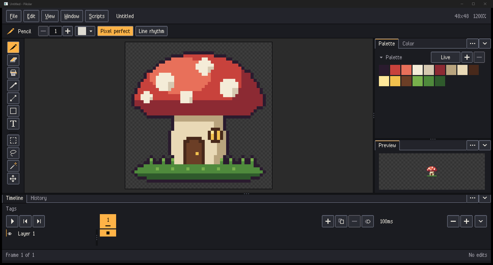
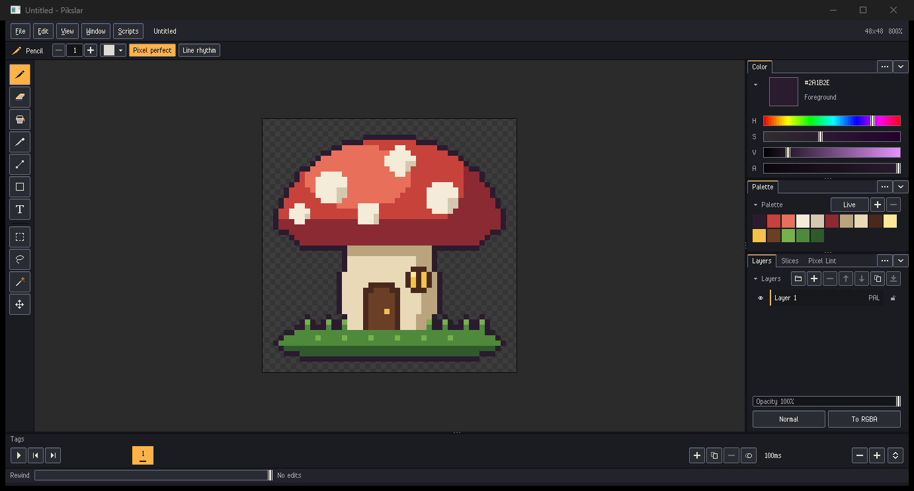
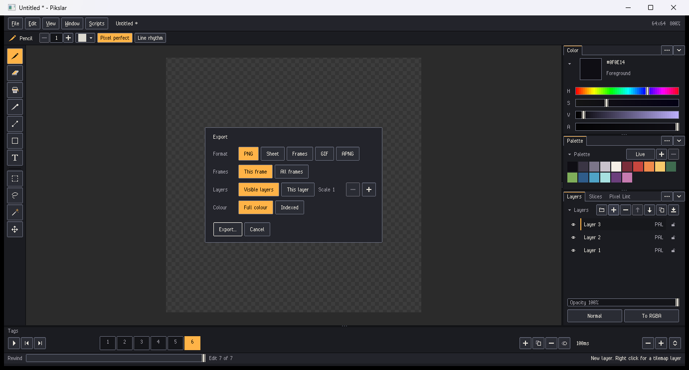
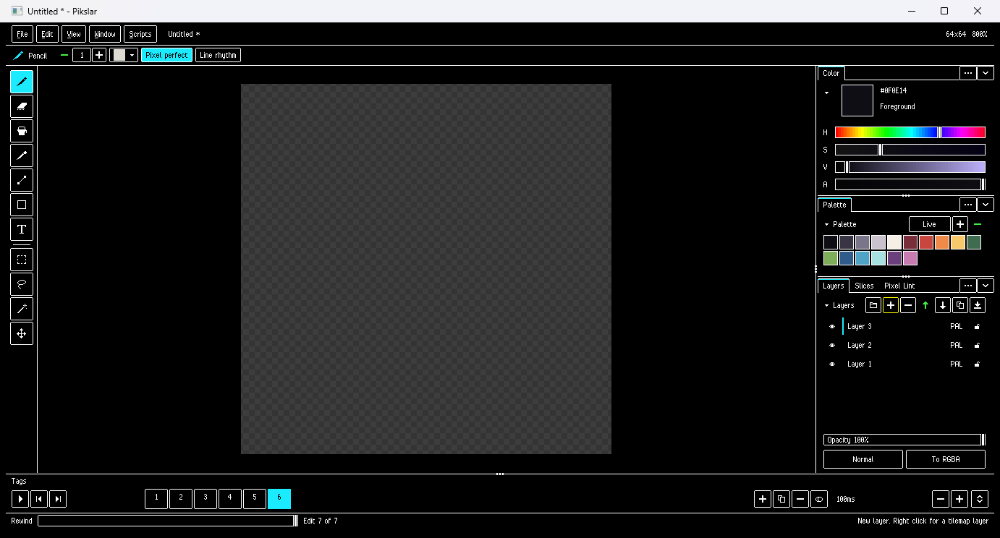

Pixel-perfect drawing
Pencil, eraser, fill, line, rectangle and picker, with pixel-perfect strokes, Line Rhythm for even steps, brush sizes and custom brushes captured from a selection.
Version 0.9.0 beta · Windows · Rust
Pikslar is a native Windows editor for drawing and animating pixel art. Layers, frames, onion skin, tilemaps and export in one small program that opens its window in about 20 milliseconds.

What it does
The tools pixel art needs, each made to work on whole pixels, with a timeline that shows every layer against every frame.
Pencil, eraser, fill, line, rectangle and picker, with pixel-perfect strokes, Line Rhythm for even steps, brush sizes and custom brushes captured from a selection.
Rename, duplicate, merge, lock and group layers. Group opacity, nine blend modes, and reference layers for tracing that never reach an export.
Every layer against every frame. Select, move, copy and link cels, hold drawings, tag frame ranges, time by frame rate, and tween positions with easing.
Frames before and after, each with its own strength and colour, and a true-size preview inside the main window.
Box, lasso and magic wand; add and subtract; move, flip and rotate the picked-up pixels, then apply or cancel.
Groups, sorting, Oklab colour ramps, lossless remaps and colour replacement. Reads and writes GIMP, JASC and hex palette files.
Tilesets and tilemap layers with flipped tiles and automatic terrains (edge, corner and 47-tile blob), exported for the Tiled editor.
Every change is one step, structural edits included. Crash recovery keeps a copy of unsaved work, and saving never leaves the disk without a whole file.
PNG, sprite sheets with JSON, PNG sequences, GIF, APNG, indexed PNG, ICO and CUR, scaled by whole numbers, per tag or per layer.
A closer look
Docked panels fold to strips when they are not needed, and each workspace keeps its own arrangement.

Draw, Animate, Tiles, Palette and others each arrange the panels for that job. The context bar above the canvas holds only what the current tool needs.

One dialog covers single frames, sheets with a JSON description, sequences and animated files. The same exports run from pikslar-cli for build scripts.

Tab reaches every control, menus and dialogs work from the keyboard, and a keyboard cursor can draw. Pikslar follows Windows high contrast and Windows text size.
Engineering
Pikslar is written from scratch in Rust against the Windows API, with no third-party libraries in its own code. Every change is measured against recorded limits before it is kept.
A Win32 window drawn by Pikslar's own renderer. Per-monitor scaling, long paths and Windows' own file dialogs.
Ctrl+S copies the document and writes in the background. The new file replaces the old one only after it has been read back, and the previous file is kept until then.
A performance gate checks drawing, compositing, undo and file speed against recorded limits, and long unattended runs drive the real window to look for leaks and stalls.
Two release builds of the same source give byte-identical files on the development computer.
Figures measured by automated tests on one Windows 11 development computer with the 0.9.0 beta build. They are not guarantees, and they have not been checked on other computers.
Development status
Pikslar 0.9.0 is the first Windows beta. It is tested by automation, but nobody outside development has used it yet.
| Drawing, layers, animation, tilemaps, palettes, export | Done Covered by the automated test suite and window-driving workflows. |
|---|---|
| Aseprite import, scripting, plugins, Rewind | Experimental Built and tested, with less coverage or known gaps. Aseprite files are read only, never written. |
| Windows 11 | Tested On one computer, by automation. |
| Windows 10 (1703 or later, 64-bit) | Untested Expected to run; not yet tried. Older Windows cannot start it. |
| Use by real people | Not yet Usability testing has not started. |
| Screen readers, pen tablets | Not supported Pen input is under investigation. |
| Code signing | Not signed Windows shows a SmartScreen warning on first start. |
| Licence | PolyForm Noncommercial 1.0.0 Free for noncommercial use, changes and sharing. Commercial use needs permission. |
Get Pikslar
There is no public release. When there is one, it will be listed under the repository's releases with its checksum, and linked here.
Needs Windows 10 or 11 (64-bit), Rust for the x86_64-pc-windows-gnu target and a MinGW-w64 linker. Release packages are built by spikes/make-release.ps1.
cargo run --release -p pikslarOpen a file directly with pikslar sprite.piks or pikslar image.png. The guide covers the rest.
The source repository is not public yet.